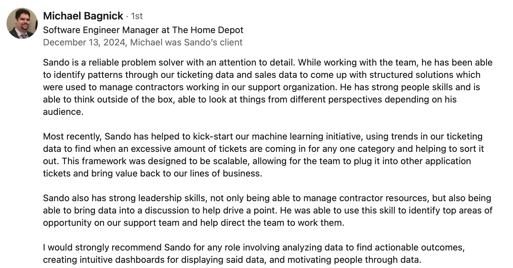
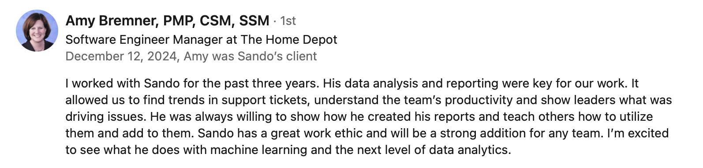
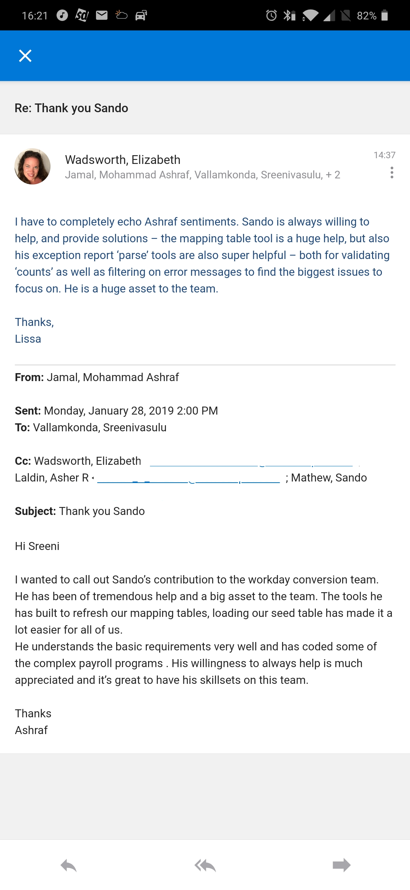
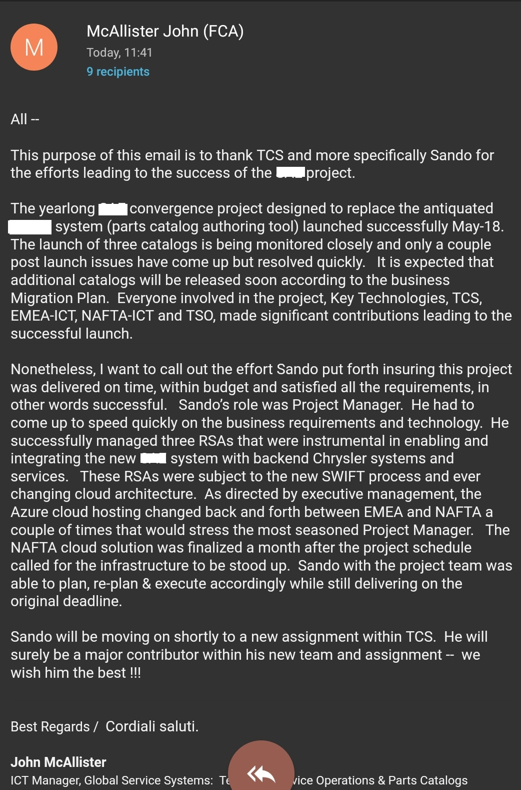

About Me
I help organizations achieve product-led operational excellence by applying Design Thinking to transform complex technical debt into scalable AI-native patterns. With over 15 years of experience, I specialize in the zero-to-one product launch of internal reliability ecosystems that bridge the gap between engineering curiosity and enterprise-grade business outcomes. My approach combines deep technical fluency in SRE and AI/ML with a human-centered design mindset. I thrive at the intersection of customer empathy and rapid prototyping, ensuring that every internal capability is built for durability, compliance, and rapid adoption.
Products & Demos
PetPalAI: GenAI Product for pet parents
• Owned vision, roadmap, planning, and execution of a modular Django GenAI platform to demonstrate scalable AI adoption. • Defined multi-agent workflow strategy and governance model aligning Product, Process, Pricing and Performance objectives. • Applied responsible AI practices for validation, governance, and scalability.
* hover or click for detailsStack: Django, LangChain, Ollama, RAG, Vector DB
Outcomes: Validated multi-agent workflows, applied Responsible AI practices.
View detailsAI/ML Data Product: ML initiative
Kick-started a ML initiative for a Fortune 100 retail client to optimize support process to identify ticket anomalies, routing and assignment automation.
Stack: BQML, ARIMA+, XGBOOST, Linear and Logistic Regression, Python, BigQuery, SQL
Outcomes: Reduced MTTR by 50%, productivity increase by 25%, SLA optimization, improved customer satisfaction.
Internal Reliability Platform
Custom incident management automation platform reducing incident manager overhead, streamlining process.
Stack: Python, Django, Pandas, Matplotlib, ServiceNow and PagerDuty API integrations
Outcomes: Reduced change outages by 95%, 100% adoption by incident managers, features incorporated to MIM.
Experience
Independent Technical Product Manager - Self-Directed Product Development (PetPalAI)
2025 - Present
- Product Architecture & Execution: Designed the PetPalAI prototype/Minimal Viable Product (MVP) (a GenAI application for pet care), architecting the platform using Django and integrating LangChain and Ollama for LLM-driven data extraction.
- Agentic Workflow Prototyping (Platform Innovation): Engineered multi-step autonomous agent pipelines (e.g., account and pet setup) to validate and prove complex stateful agentic workflows, a key innovation in modern internal platforms.
- AI Development Governance: Leveraged AI-Augmented Development (GPT-4, Claude, GitHub Copilot) to accelerate coding and feature engineering by 35%, validating all AI-generated outputs for production-readiness and responsible AI governance.
- Strategic Upskilling: Achieved the AWS Certified Machine Learning – Specialty (May 2025) to build expertise in cloud-native MLOps, multimodal AI, and compliance best practices, ensuring immediate capability in any PBC environment.
Platform Product Manager - Associate Consultant | Tata Consultancy Services
2011 - 2024
- Revenue Operations & Q2C: Recovered $700K+ in monthly revenue by architecting an automated prioritization engine for mission-critical Quote-to-Cash workflows.
- AI/ML Data Product: Boosted productivity by 25% via a predictive ML program (BigQuery ML) designed to forecast enterprise ticket volumes. Drove 30% resource efficiency and a 50% reduction in resolution times by building a scalable internal reliability ecosystem.
- Internal Reliability Platform Owner: Reduced critical outages by 95% through the 0→1 architected launch of a global Incident Management platform, achieving 100% user adoption.
- Platform Modernization & Internal Tooling: Accelerated platform modernization by 60% by co-designing roadmaps and high-velocity conversion tools for legacy-to-cloud migrations.
- SAE Convergence – Legacy Modernization - Program - managed the global modernization of MACS → SAE catalog platform, aligning EMEA/NAFTA teams and navigating complex Azure cloud migrations. Delivered on time and within budget, meeting all KPIs and earning executive recognition for leadership and delivery excellence.
Development Manager | HTC Global Services Limited
2009 - 2011
- Legacy Platform Modernization: Led DB2 V8 to V9 upgrades and complex SQL modeling initiatives for major insurance clients, ensuring alignment with industry architectural standards(IAA).
- Delivery & Metrics: Supported project delivery and established metrics tracking for mid-tier modernization programs across auto and property insurance portfolios.
Senior Software Engineer | Mahindra Satyam (formerly Satyam)
2002 - 2009
- ETL Product Development: Built advanced Extract-Transform-Load (ETL) logic to modernize legacy rate quote systems, which immediately reduced the end-to-end cycle time by 60%.
- Process Automation: Automated data migration and schedule table builds for a major BMC CONTROL-M migration, significantly enhancing operational visibility and data reliability.
Appreciations & Recommendations
"Sando is a reliable problem solver with an attention to detail. While working with the team, he has been able to identify patterns through our ticketing data and sales data to come up with structured solutions which were used to manage contractors working in our support organization. He has strong people skills and is able to think outside of the box, able to look at things from different perspectives depending on his audience. Most recently, Sando has helped to kick-start our machine learning initiative, using trends in our ticketing data to find when an excessive amount of tickets are coming in for any one category and helping to sort it out. This framework was designed to be scalable, allowing for the team to plug it into other application tickets and bring value back to our lines of business. Sando also has strong leadership skills, not only being able to manage contractor resources, but also being able to bring data into a discussion to help drive a point. He was able to use this skill to identify top areas of opportunity on our support team and help direct the team to work them. I would strongly recommend Sando for any role involving analyzing data to find actionable outcomes, creating intuitive dashboards for displaying said data, and motivating people through data."

"I worked with Sando for the past three years. His data analysis and reporting were key for our work. It allowed us to find trends in support tickets, understand the team’s productivity and show leaders what was driving issues. He was always willing to show how he created his reports and teach others how to utilize them and add to them. Sando has a great work ethic and will be a strong addition for any team. I’m excited to see what he does with machine learning and the next level of data analytics."

"I have to completely echo Ashraf sentiments. Sando is always willing to help, and provide solutions - the mapping table tool is a huge help, but also his exception report 'parse' tools are also super helpful - both for validating 'counts' as well as filtering on error messages to find the biggest issues to focus on. He is a huge asset to the team. -Lissa
I wanted to call out Sando's contribution to the workday conversion team. He has been of tremendous help and a big asset to the team. The tools he has built to refresh our mapping tables, loading our seed table has made it a lot easier for all of us. He understands the basic requirements very well and has coded some of the complex payroll programs. His willingness to always help is much appreciated and it's great to have his skillsets on this team. - Ashraf"

"I want to call out the effort Sando put forth insuring this project was delivered on time, within budget and satisfied all the requirements, in other words successful. Sando's role was Project Manager. He had to come up to speed quickly on the business requirements and technology. He successfully managed three RSAs that were instrumental in enabling and integrating the new SAE system with backend Chrysler systems and services. These RSAs were subject to the new SWIFT process and ever changing cloud architecture. As directed by executive management, the Azure cloud hosting changed back and forth between EMEA and NAFTA a couple of times that would stress the most seasoned Project Manager. The NAFTA cloud solution was finalized a month after the project schedule called for the infrastructure to be stood up. Sando with the project team was able to plan, re-plan & execute accordingly while still delivering on the original deadline.
Sando will be moving on shortly to a new assignment within TCS. He will surely be a major contributor within his new team and assignment - we wish him the best !!!"

Certifications
Contact
You can reach me via:
- LinkedIn: linkedin.com/in/sandomathew
- GitHub: github.com/sandomathew